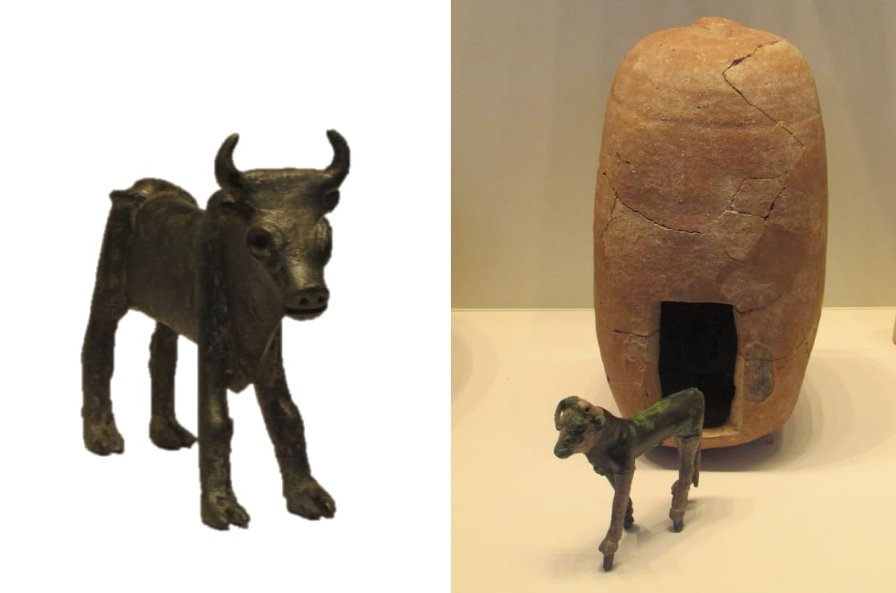
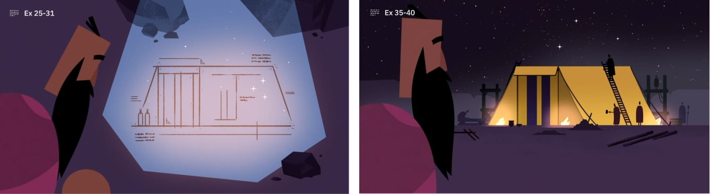

Imes, Carmen. Ídolos em Forma de Bezerro. Israel Museum.Imes, Carmen. Calf Idols. Israel Museum.
Arão fabrica um "ídolo em forma de bezerro" (Êx 32:4) quando o povo o exige. Esse bezerro de ouro provavelmente refletia outros objetos semelhantes das práticas de adoração da época. Acima estão dois exemplos de ídolos em forma de bezerro. O da esquerda é um touro de bronze do século XII a.C. de Samaria, e o da direita é um bezerro de bronze folheado a prata do século XVI a.C. e seu santuário de Ascalom.Aaron crafts an "idol in the shape of a calf" (Exod. 32:4) when the people demand it of him. This golden calf likely reflected other similar objects from the worship practices of the day. Above are two examples of calf idols. The one on the left is a 12th century B.C.E. bronze bull from Samaria, and the one on the right is a 16th century B.C.E. silver-plated bronze calf and its shrine from Ashkelon.
Não está claro no texto se Arão acha que está criando uma representação visual de YHWH, uma representação do transporte de YHWH, ou se está introduzindo uma nova divindade em Israel como Baal, de Canaã.It's unclear from the text if Aaron thinks he's creating a visual representation of YHWH, a representation of YHWH's transport, or if he's introducing a new deity to Israel like Baal of Canaan.
O propósito do êxodo foi demonstrar a superioridade de YHWH sobre os deuses. Fabricar esse ídolo é uma contradição direta a isso, e quebra o primeiro mandamento: não ter outros deuses nem fazer ídolos deles.The point of the exodus was to demonstrate YHWH's superiority over the gods. Crafting this idol is a direct contradiction to this, and it breaks the first command—have no other gods or make idols of them.
"Visto que a idolatria diminui a glória de Deus, e visto que os seres humanos são feitos à imagem de Deus, segue-se que a idolatria também é prejudicial à própria essência da nossa humanidade. ... A idolatria é autolesão radical. É também radicalmente, terrivelmente irônica. Ao tentar ser como Deus (na tentação e rebelião originais), acabamos nos tornando menos humanos. ... Se você adora aquilo que não é Deus, reduz a imagem de Deus em si mesmo. Se você adora aquilo que nem sequer é humano, reduz ainda mais a sua humanidade.""Since idolatry diminishes the glory of God, and since humans are made in the image of God, it follows that idolatry is also detrimental to the very essence of our humanity. ... Idolatry is radical self-harm. It is also radically, terribly ironic. In trying to be as God (in the original temptation and rebellion), we have ended up becoming less human. ... If you worship that which is not God, you reduce the image of God in yourself. If you worship that which is not even human, you reduce your humanity still further."
Wright, Christopher J.H. (2020). "Aqui Estão os Seus Deuses": Discipulado Fiel em Tempos de Idolatria. IVP Academic. 43.Wright, Christopher J.H. (2020). "Here Are Your Gods": Faithful Discipleship in Idolatrous Times. IVP Academic. 43.
A idolatria revela um desejo de domesticar o divino e nos aproximarmos de Deus em nossos próprios termos.Idolatry betrays a desire to domesticate the divine and approach God on our terms.
Como "imagem" de Deus (hebraico: tselem), somos seus representantes concretos no mundo. Ao adorar ídolos, abdicamos do papel que Deus nos deu. A idolatria é o inverso do nosso propósito de criação. Em vez de subjugar a criação, nos submetemos a ela e somos subjugados.As God's "image" (Hebrew: tselem), we are God's concrete representatives in the world. By worshiping idols, we abdicate our God-given role. Idolatry is the inverse of our creation purpose. Rather than subduing creation, we submit to it and are subdued.
Nós nos tornamos semelhantes àquilo que adoramos (Sl 115:1-8; 135:15-18). E Israel torna-se "de dura cerviz" assim como o bezerro de metal que adora (Êx 32:9; 33:5).We become like what we worship (Ps. 115:1-8, 135:15-18). And Israel becomes "stiff-necked" just like the metal calf they worship (Exod. 32:9, 33:5).
O incidente do bezerro de ouro (Êx 32-34) situa-se entre o momento em que as instruções do tabernáculo são dadas (Êx 25-31) e quando essas instruções são executadas na construção do tabernáculo (Êx 35-40).The gold calf incident (Exod. 32-34) falls between when the tabernacle instructions are given (Exod. 25-31) and when those instructions are carried out in the construction of the tabernacle (Exod. 35-40).
YHWH antecipa a necessidade de um sistema sacrificial capaz de lidar com os efeitos do pecado na comunidade. Antes que o incidente ocorra, ele já havia dado a Moisés os planos do tabernáculo.YHWH anticipates the need for a sacrificial system that can deal with the effects of sin in the community. Before the incident occurs, he has already given Moses the tabernacle blueprints.
BibleProject (2020). Comentário Visual: Êxodo 34:6-7.BibleProject (2020). Visual Commentary: Exodus 34:6-7.
Embora Moisés quebrar as tábuas (Êx 32:19-20) possa parecer um ato precipitado feito num acesso de fúria, a ardente ira de Moisés é justificada e espelha a ira de Deus (Êx 32:10). Quebrar as tábuas demonstra que oWhile Moses smashing the tablets (Exod. 32:19-20) may seem like a rash act done in a fit of rage, Moses' burning anger is justified, and it mirrors God's anger (Exod. 32:10). Breaking the tablets demonstrates that the
povo quebrou as estipulações da aliança.people have broken the covenant stipulations.
O incidente do bezerro de ouro destaca as diferenças na liderança e nas ações de Arão e de Moisés.The gold calf incident highlights differences in the leadership and actions of Aaron and Moses.
Moisés arriscou a própria vida ao interceder pelo povo e suplicar a misericórdia de Deus.Moses put his own life on the line by interceding for the people and begging for God's mercy.


Como o incidente do bezerro de ouro demonstra a ideia de que as pessoas acabam se tornando semelhantes ao objeto de sua adoração?How does the golden calf incident demonstrate the idea that people eventually become like the object of their worship?